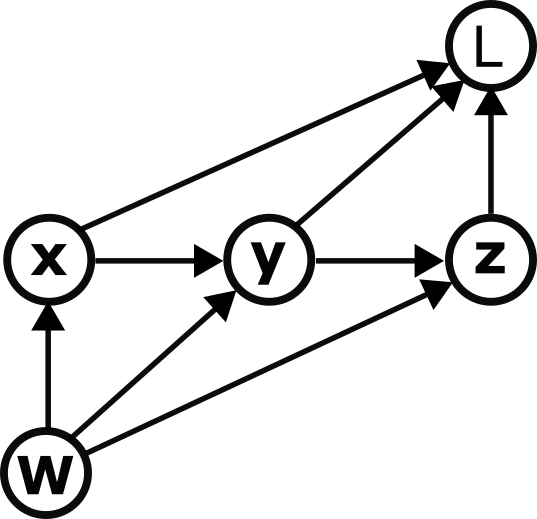
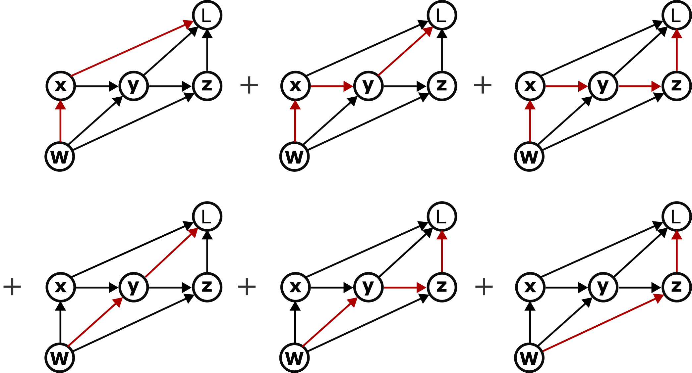
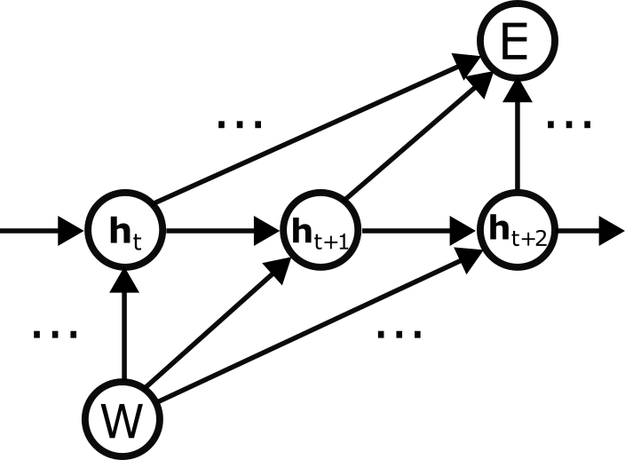
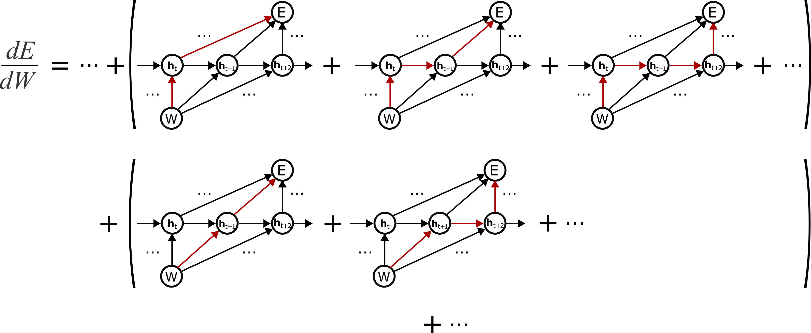

A graphical derivation of the classical back-propagation through time factorization
TL;DR An intuitive derivation of the "classical" factorization of the loss gradient in backpropagation through time mentioned in Bellec et al 2020.
Here we use computation graphs to graphically derive the "classical factorization" of the loss gradient in backpropagation through time. This serves as the starting point for the derivation of the recently proposed "e-prop" learning rule (Murray 2019, Bellec et al 2020), which connects loss gradients in machine learning to biologically plausible, local plasticity rules.
Gradient of the loss with respect to weights in a recurrent neural network
Assume that a loss function \( E \) depends on a set of hidden states \( \{ \mathbf{h}^t \} \) of a recurrent neural network parameterized by a weight matrix \( W \). Define the classical factorization of the loss gradient \( \nabla_W E \) as
\[ \nabla_W E \equiv \frac{dE}{dW_{ji}} = \sum_t \frac{dE}{d\mathbf{h}_j^t} \frac{\partial\mathbf{h}_j^t}{\partial W_{ji}} \]where \( j \) indexes the post-synaptic neuron. For simplicity we'll ignore the index \( j \) (it essentially means that a specific weight only affects the loss through the neuron it projects onto), and instead focus on the version
\[ \frac{dE}{dW} = \sum_t \frac{dE}{d\mathbf{h}^t} \frac{\partial\mathbf{h}^t}{\partial W} \]which captures the essence of the problem in its fully vectorial format. Note that the first term is a total derivative whereas the second term is a partial derivative.
At the end of the day, the derivation boils down to the multivariate chain rule, but unfortunately if you just start plugging and chugging, it's easy to get lost. For instance, you might start by summing up the partials of \( E \) with respect to \( \mathbf{h}^t \) multiplied by the total derivatives of \( \mathbf{h}^t \) with respect to \( W \)
\[ \frac{dE}{dW} = \sum_t \frac{\partial E}{\partial \mathbf{h}^t} \frac{d \mathbf{h}^t}{dW}. \]If you treat \( \mathbf{h}^t \) and \( W \) as scalars and assume that \( E = E(\{ \mathbf{h}^t \}) \) and \( \mathbf{h}^t = \mathbf{h}^t(W) \), this is exactly what you would have learned to do in multivariate calculus class. But compared to the classical factorization the partial and total derivatives are reversed! How can we recover the classical factorization without getting lost in a sea of derivatives?
The secret is to think in terms of computation graphs, one of the central concepts that has made machine learning what it is today.
Computation graphs and the chain rule
Essentially, computation graphs are directed acyclic graphs that specify how information flows through a computation, and they are super useful for computing gradients. See Christopher Olah's excellent blog post for details about how they work. For example, we can depict the set of functions
\[ \mathbf{x} = \mathbf{x}(W) \quad \quad \mathbf{y} = \mathbf{y}(\mathbf{x}, W) \quad \quad \mathbf{z} = \mathbf{z}(\mathbf{y}, W) \quad \quad L = L(\mathbf{x}, \mathbf{y}, \mathbf{z}) \quad \quad \]as

.Now, if we wanted to figure out the gradient of \( L \) with respect to \( W \) we could crunch through the chain rule. However, there's a good chance we'd get lost or end up with a bunch of decisions to make about how to group terms to keep everything from getting out of control.
Summing over paths to compute derivatives
Enter the computation graph, which makes everything immensely easier. The rule for computing the total derivative of one node B with respect to an ancestor node A is very simple: sum up all of the paths from A to B. (The total derivative specifies the change in B caused by a change in A through all possible other variables through which A could influence B.) Stated more precisely, the sum is indeed a sum over paths, where each "path" is represented mathematically as the product of Jacobians going backward along the path.
For example, to calculate the total derivative \( dL/dW \) we first enumerate all six paths from \( W \) to \( L \):

and then sum them via: \[ \begin{split} \frac{dL}{dW} & = \mathcal{D}_{L\mathbf{x}}\mathcal{D}_{\mathbf{x}W} + \mathcal{D}_{L\mathbf{y}}\mathcal{D}_{\mathbf{y}\mathbf{x}}\mathcal{D}_{\mathbf{x}W} + \mathcal{D}_{L\mathbf{z}}\mathcal{D}_{\mathbf{z}\mathbf{y}}\mathcal{D}_{\mathbf{y}\mathbf{x}}\mathcal{D}_{\mathbf{x}W} \\ & + \mathcal{D}_{L\mathbf{y}}\mathcal{D}_{\mathbf{y}W} + \mathcal{D}_{L\mathbf{z}}\mathcal{D}_{\mathbf{z}\mathbf{y}}\mathcal{D}_{\mathbf{y}W} + \mathcal{D}_{L\mathbf{z}}\mathcal{D}_{\mathbf{z}W} \end{split} \]where \( \mathcal{D}_{BA} \) is the Jacobian of \( B \) with respect to \( A \). Recall that the Jacobian is the matrix of partial derivatives of each component of \( B \) with respect to each component of \( A \), whose dimension is \( \text{dim}(B) \times \text{dim}(A) \).
Factorizing sums of paths
We still need one more trick, however. Counting paths can also get out of hand pretty quickly. Luckily, however, we can factorize these sums, essentially by identifying which terms have common Jacobians and applying the distributive rule. There are various ways to do this, but one that will be particularly useful in our case is to group the first three terms together, then the next two terms, then the final term:
\[ \begin{split} \frac{dL}{dW} & = (\mathcal{D}_{L\mathbf{x}}\mathcal{D}_{\mathbf{x}W} + \mathcal{D}_{L\mathbf{y}}\mathcal{D}_{\mathbf{y}\mathbf{x}}\mathcal{D}_{\mathbf{x}W} + \mathcal{D}_{L\mathbf{z}}\mathcal{D}_{\mathbf{z}\mathbf{y}}\mathcal{D}_{\mathbf{y}\mathbf{x}}\mathcal{D}_{\mathbf{x}W}) + (\mathcal{D}_{L\mathbf{y}}\mathcal{D}_{\mathbf{y}W} + \mathcal{D}_{L\mathbf{z}}\mathcal{D}_{\mathbf{z}\mathbf{y}}\mathcal{D}_{\mathbf{y}W}) + \mathcal{D}_{L\mathbf{z}}\mathcal{D}_{\mathbf{z}W} \\ & = (\mathcal{D}_{L\mathbf{x}} + \mathcal{D}_{L\mathbf{y}}\mathcal{D}_{\mathbf{y}\mathbf{x}} + \mathcal{D}_{L\mathbf{z}}\mathcal{D}_{\mathbf{z}\mathbf{y}}\mathcal{D}_{\mathbf{y}\mathbf{x}})\mathcal{D}_{\mathbf{x}W} + (\mathcal{D}_{L\mathbf{y}} + \mathcal{D}_{L\mathbf{z}}\mathcal{D}_{\mathbf{z}\mathbf{y}})\mathcal{D}_{\mathbf{y}W} + \mathcal{D}_{L\mathbf{z}}\mathcal{D}_{\mathbf{z}W}. \end{split} \]Here we have organized the set of paths by grouping the paths according to which of them share a common edge from \( W \) to one of the intermediate nodes. We can in turn notice that the left hand term in each product is in fact a total derivative:
\[ \frac{dL}{dW} = \frac{dL}{d\mathbf{x}}\mathcal{D}_{\mathbf{x}W} + \frac{dL}{d\mathbf{y}}\mathcal{D}_{\mathbf{y}W} + \frac{dL}{d\mathbf{z}}\mathcal{D}_{\mathbf{z}W}. \]We have almost arrived at the classical factorization of BPTT.
Return to backpropagation through time
The computation graph for a recurrent neural network with hidden states \( \mathbf{h}^t \) and parameterized by weights \( W \) is:

We will now factorize the gradient of the loss \( E \) with respect to the weights \( W \). As with the last example, we will group terms according to the first edge out of \( W \):

or, mathematically: \[ \begin{split} \frac{dE}{dW} & = \dots + (\mathcal{D}_{E\mathbf{h}^t} + \mathcal{D}_{E\mathbf{h}^t}\mathcal{D}_{\mathbf{h}^{t+1}\mathbf{h}^t} + \dots )\mathcal{D}_{\mathbf{h}^tW} + (\mathcal{D}_{E\mathbf{h}^{t+1}} + \mathcal{D}_{E\mathbf{h}^{t+1}}\mathcal{D}_{\mathbf{h}^{t+2}\mathbf{h}^{t+1}} + \dots )\mathcal{D}_{\mathbf{h}^{t+1}W} + \dots \\ & = \dots + \frac{dE}{d\mathbf{h}^t}\mathcal{D}_{\mathbf{h}^tW} + \frac{dE}{d\mathbf{h}^{t+1}}\mathcal{D}_{\mathbf{h}^{t+1}W} \\ \end{split} \]where we replaced the left-hand terms with their corresponding total derivatives (since they specify all paths from \( \mathbf{h}^t \)<\span> to \( E \). Finally, recalling that the Jacobian is a matrix of partial derivatives, we arrive at
\[ \frac{dE}{dW} = \sum_t \frac{dE}{d\mathbf{h}^t}\frac{\partial \mathbf{h}^t}{\partial W} \]recovering the classical factorization.